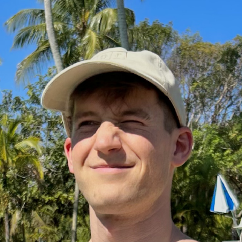

<!doctype html>
<html>
<head>
</head>
  <title>About Me</title>
  <meta name="description" content="About me">
  <meta name="keywords" content="nicholas gabriel phd student george washington university physics complex systems ai deep learning">
</html>

<body>
  <h1>Nicholas A. Gabriel</h1>
  <p> <a href="resume.pdf">CV</a> | <a
  href="https://scholar.google.com/citations?user=qffTnZsAAAAJ&hl=en">Google Scholar</a> | <a
  href="https://github.com/nngabe">GitHub</a> | <a
  href="https://www.linkedin.com/in/nicholas-gabriel-682540b6/">LinkedIn</a></p>
  

  <h2>About Me</h2>
  <p>I am a PhD candidate in the Physics Department at The George Washington University. 
     I study social dynamics and influence using graph learning and operator learning approaches,
     with a particular emphasis on malicious and extremist actors. This work is highly interdisciplinary 
     and makes connections between the social sciences, complex systems physics and AI/ML: providing powerful techniques to leverage heterogenous 
     social data to understand and quantify social systems; developing new architectures for solving inverse problems 
     in complex systems physics; and providing novel and high impact use cases for both graph learning and operator 
    learning.
  </p>

  <h2>Publications</h2>
  <ul>
    <li><a href="https://arxiv.org/abs/2305.16544">Inductive detection of Influence Operations via Graph Learning.</a><br>
    <b>Nicholas A. Gabriel</b>, David A. Broniatowski, Neil F. Johnson<br>
    <i>arXiv:2305.16544</i>, 2023.</li>
    <li><a href="https://www.oajaiml.com/uploads/archivepdf/57451124.pdf">Using Neural Architectures to Model Complex Dynamical Systems.</a><br>
    <b>Nicholas A. Gabriel</b>, Neil F. Johnson<br>
    <i>Advances in Artificial Intelligence and Machine Learning</i>, 2022.</li>
    <li><a href="https://www.nature.com/articles/s41598-021-89467-y">Online hate network spreads malicious COVID-19 content outside the control of individual social media platforms.</a><br>
    Nicolas Velasquez, Rhys Leahy, N Johnson Restrepo, Yonatan Lupu, Richard Sear, <b>Nicholas Gabriel</b>, OK Jha, Beth Goldberg, NF Johnson<br>
    <i>Scientific Reports</i>, 2021.</li>
    <li><a href="https://www.nature.com/articles/s41586-020-2281-1">The online competition between pro- and anti-vaccination views.</a><br>
    Neil F Johnson, Nicolas Velásquez, Nicholas Johnson Restrepo, Rhys Leahy, <b>Nicholas Gabriel</b>, Sara El Oud, Minzhang Zheng, Pedro Manrique, Stefan Wuchty, Yonatan Lupu<br>
    <i>Nature</i>, 2020.</li>
    <li><a href="https://ieeexplore.ieee.org/stamp/stamp.jsp?arnumber=9091126">Quantifying COVID-19 content in the online health opinion war using machine learning.</a><br>
    Richard F Sear, Nicolás Velásquez, Rhys Leahy, Nicholas Johnson Restrepo, Sara El Oud, <b>Nicholas Gabriel</b>, Yonatan Lupu, Neil F Johnson<br>
    <i>IEEE Access</i>, 2020.</li>
  </ul>

    <h2>Presentations</h2>
  <ul>
    <li><b>The George Wasington University</b> (ENIGMA seminar, 45m presentation) [<a href="https://www.dropbox.com/scl/fi/2py8doe6gaqjwv9g6pcuw/Multiscale_operator_learning_for_social_dynamics.pdf?rlkey=1ljnspm5zjjvnc9mn66qfcvm6&dl=0">slides</a>]<br>
    <i>``Multiscale Operator Learning for complex social systems''</i>, 10/4/2023.</li>
    <p />
    <li><b>Brown University</b> (CRUNCH group meeting, 40m presentation) [<a href="https://www.dropbox.com/scl/fi/2py8doe6gaqjwv9g6pcuw/Multiscale_operator_learning_for_social_dynamics.pdf?rlkey=1ljnspm5zjjvnc9mn66qfcvm6&dl=0">slides</a>]<br>
    <i>``Multiscale Operator Learning for complex social systems''</i>, 9/15/2023.</li> 
    <p />
    <li><b>IC2S2 2022</b> (Conference talk, 15m presentation) [<a href="https://www.dropbox.com/scl/fi/44ifnifzvj4mn8pejtpuv/Detection_of_Information_Operations_using_Graph_Neural_Networks__IC2S2_presentation_.pdf?rlkey=fneix3sfo9sd4ofwslhjtea5n&dl=0">slides</a>]<br>
    <i>``Automated Detection of Information Operations Using Graph Neural Networks''</i>, 7/21/2022.</li>  
    <p />
    <li><b>Brookhaven National Laboratory</b> (PROSPECT group meeting, 20m presentation) [<a href="https://www.dropbox.com/scl/fi/48k195i475yz34hptiuao/Mass_calibration_for_PROSPECT__5635959pkmbcy_.pdf?rlkey=9tskq5sudclozjmf1tpdei4l0&dl=0">report</a>]<br>
    <i>``Mass calibration for PROSPECT''</i>, 8/10/2016.</li>
  </ul>


  <h2>Misc</h2>
  <ul>
      In my spare time I enjoy cooking, reading, and staring into the sun while wearing NPR hats (see photo evidence above). 
  </ul>
</body>

</html>
